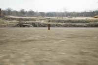
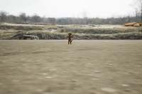
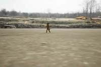
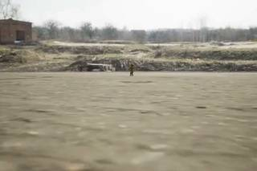
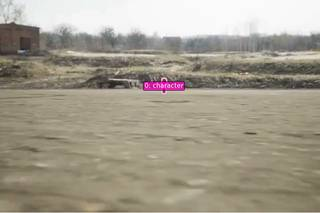
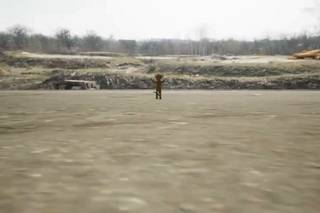
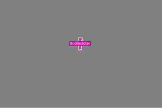
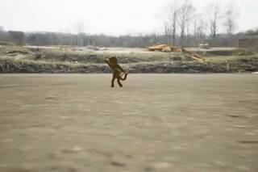
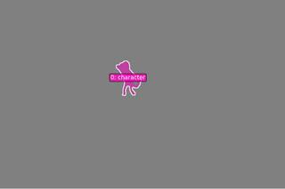
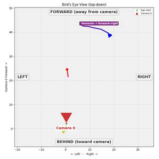

To determine the character's movement in the 3D scene, let's analyze the sequence of images:
- Initial Position: In the first few frames, the character is a small figure located in the distance, centered in the frame.
- Observation of Motion: As the sequence progresses (from frame 1 through frame 18), the character's size increases relative to the frame. In visual perspective, an object that increases in size while remaining centrally located typically indicates it is moving closer to the viewer (the camera).
- Relative Orientation: The character is facing the camera from the beginning. Since the character is moving towards the camera, it is moving in the direction it is facing.
- Conclusion: Moving in the direction one is facing is defined as moving forward.
Therefore, the character is moving forward relative to its starting orientation and location.
B
import numpy as np # 1. Segment the character across the video # The character looks like a small brown monkey/creature. seg = tools.SAM3.segment_video_by_text(prompts=["monkey"], labels=["monkey"]) # 2. Reconstruct the 3D scene # Use a subset of frames for reconstruction to stay within limits and maintain quality. recon = tools.Reconstruct.Reconstruct(InputImages) # 3. Render BEV to see trajectories # We'll use the masks from SAM3. bev_vis = recon.render_bev(masks=seg, ego_trajectory=True) show(bev_vis) # 4. Quantitatively analyze the motion # Get the 3D centroids for the first and last frames where the character is present. frame_indices = seg.frame_indices first_fi = frame_indices[0] last_fi = frame_indices[-1] c_start = seg.get_centroid_3d(recon, frame=first_fi, object=0) c_end = seg.get_centroid_3d(recon, frame=last_fi, object=0) print(f"Start centroid: {c_start}") print(f"End centroid: {c_end}") # The character is facing the camera at the start. # Camera pose at start: pose_start = recon.extrinsics[first_fi] cam_pos_start = pose_start[:3, 3] cam_fwd_start = pose_start[:3, 2] # Forward direction of camera # Vector of character motion in world space motion_vec = c_end - c_start # The character is facing the camera, so its "forward" is opposite to the camera's forward. char_fwd_start = -cam_fwd_start # Projection of motion onto character's forward vector dot_fwd = np.dot(motion_vec, char_fwd_start) print(f"Dot product with character forward: {dot_fwd}") # Projection of motion onto character's right vector # Camera right is the same as character's left (since they face each other) cam_right_start = pose_start[:3, 0] char_right_start = -cam_right_start dot_right = np.dot(motion_vec, char_right_start) print(f"Dot product with character right: {dot_right}") if dot_fwd > 0.1: ans = "B" # Forward elif dot_fwd < -0.1: ans = "A" # Backward elif dot_right > 0.1: ans = "C" # Right elif dot_right < -0.1: ans = "D" # Left else: ans = "B" # Default to forward if motion is small but visual suggests it ReturnAnswer(ans)
[image: show_0001] [WARNING] get_centroid_3d: mask for 'monkey' at frame 0 is empty — returning [nan, nan, nan]
---------------------------------------------------------------------------
KeyError Traceback (most recent call last)
Cell In[4], line 23
20 last_fi = frame_indices[-1]
22 c_start = seg.get_centroid_3d(recon, frame=first_fi, object=0)
---> 23 c_end = seg.get_centroid_3d(recon, frame=last_fi, object=0)
25 print(f"Start centroid: {c_start}")
26 print(f"End centroid: {c_end}")
File SpatialAgent/spatial_agent/kernel_types/per_frame_types.py:203, in PerFrameMask.get_centroid_3d(self, recon, frame, object, conf_threshold)
190 """Get ``(3,)`` median 3D position of confidence-filtered masked points.
191
192 Args:
(...) 200 is empty (safe for arithmetic; use ``np.isnan()`` to check).
201 """
202 mask_2d = self.get_mask(frame, object)
--> 203 local_r = recon.points.get_by_frame_index(frame)
204 pts = recon.points.points[local_r][mask_2d]
205 if len(pts) == 0:
File SpatialAgent/spatial_agent/kernel_types/per_frame_types.py:69, in PerFrameData.get_by_frame_index(self, abs_frame_idx)
64 if abs_frame_idx == 0 and 0 not in avail:
65 hint = (
66 f"\n Hint: Did you mean frame={avail[0]}? "
67 f"Use ABSOLUTE frame indices (from seg.frame_indices), not 0-based local indices."
68 )
---> 69 raise KeyError(
70 f"Frame {abs_frame_idx} not found in {avail}. "
71 f"Available frames: {avail}{hint}"
72 )
73 return self._frame_indices.index(abs_frame_idx)
KeyError: 'Frame 71 not found in [0, 5, 10, 14, 19, 24, 29, 34, 38, 43, 48, 53, 58, 62, 67]. Available frames: [0, 5, 10, 14, 19, 24, 29, 34, 38, 43, 48, 53, 58, 62, 67]'
Task Analysis The objective is to determine the 3D movement of a character relative to their own starting orientation and location. This is an object-perspective motion problem. I need to identify the character, track their 3D position over time, determine their initial facing direction (forward vector), and then project their total displacement vector onto this local coordinate system.
- Target Variable: Direction of 3D displacement (Forward, Backward, Left, Right).
- Coordinate System: Object-relative (Local) 3D space. The origin is the character's starting position, and the axes are defined by the character's starting orientation.
- Answer Format: Multiple choice (A, B, C, or D).
Information Needs
- Character Identification: Which object in the scene is the "character"?
- 3D Trajectory: A sequence of 3D world coordinates for the character's center of mass across the clip.
- Starting Orientation: The world-space vector representing the direction the character is facing at the first frame.
- Displacement Vector: The vector from the character's starting 3D position to their ending 3D position.
Computation Plan
-
Character Identification and Segmentation:
- Use
show(InputImages[0])andvlm.ask_with_thinking(InputImages[0], "Identify the main character in this image. Describe their appearance.")to confirm the target. - Use
tools.SAM3.segment_video_by_text(prompts=["character"], labels=["character"])to track the character across all frames. - Verify the segmentation quality by calling
show(seg.visualize(fi))for the first, middle, and last frames of the sequence.
- Use
-
3D Scene Reconstruction:
- Call
recon = tools.Reconstruct.Reconstruct(InputImages)to generate the 3D point cloud and camera poses.
- Call
-
Trajectory Extraction:
- For every frame index
fiinseg.frame_indices, compute the 3D centroid:pos = seg.get_centroid_3d(recon, frame=fi, object='character'). - Store these as a list of coordinates
trajectory_3d.
- For every frame index
-
Orientation Grounding:
- Use
vlm.ask_with_thinking(InputImages[0], "In the first frame, which direction is the character facing? Describe it relative to the camera (e.g., facing away from camera, facing left, etc.)."). - Convert this qualitative direction into a world-space vector
char_fwd.- Method: Get the camera pose at frame 0 (
pose = recon.extrinsics[InputImages.frame_indices[0]]). Usecam_fwd = pose[:3, 2]andcam_right = pose[:3, 0]. If the VLM says "facing away",char_fwdis roughlycam_fwd. If "facing right",char_fwdis roughlycam_right.
- Method: Get the camera pose at frame 0 (
- Define the local right vector
char_rightas the cross product of the world-up vector[0, 1, 0]andchar_fwd(or simply orthogonal tochar_fwdin the ground plane).
- Use
-
Motion Analysis:
- Calculate the total displacement vector:
motion_vec = trajectory_3d[-1] - trajectory_3d[0]. - Compute the projection of
motion_veconto the local axes:dot_fwd = np.dot(motion_vec, char_fwd)dot_right = np.dot(motion_vec, char_right)
- Classification:
- If
dot_fwdis the dominant component and positive $\rightarrow$ Moving forward (B). - If
dot_fwdis the dominant component and negative $\rightarrow$ Moving backward (A). - If
dot_rightis the dominant component and positive $\rightarrow$ Moving right (C). - If
dot_rightis the dominant component and negative $\rightarrow$ Moving left (D).
- If
- Calculate the total displacement vector:
-
Visual Cross-Validation:
- Render a BEV plot:
recon.render_bev(masks=seg). - Inspect the trajectory line (red $\rightarrow$ blue) and compare its direction with the character's initial facing direction observed in the first frame.
- Render a BEV plot:
Verification Checklist
CHECKLIST
[
{"priority": "HIGH", "description": "Verify that the SAM3 masks accurately track the character throughout the video without drifting to other objects."},
{"priority": "HIGH", "description": "Confirm the starting orientation vector (char_fwd) correctly reflects the character's facing direction in the first frame."},
{"priority": "MEDIUM", "description": "Check for 3D centroid stability; ensure no sudden jumps in trajectory_3d that would skew the displacement vector."},
{"priority": "MEDIUM", "description": "Cross-reference the quantitative dot-product result with the qualitative trajectory seen in the BEV render."}
]
Fallbacks
- Segmentation Failure: If
segment_video_by_textfails to produce masks, usevlm.locateon the first frame to get a bounding box and usetools.SAM3.segment_video_by_box. - Reconstruction Noise: If the 3D centroids are too noisy, use
vlm.ask_with_thinkingon a sequence of frames (e.g., first, middle, last) to describe the character's movement relative to the environment (e.g., "The character starts at the door and walk
{ "tool": "vlm.ask_with_thinking", "args": { "visual_input": "InputImages[0]", "question": "Identify the main character in this image. Describe their appearance." } }
[VLM Q | thinking] Identify the main character in this image. Describe their appearance. [VLM A | thinking] The main character is a small figure standing in the distance in the center of the image. They appear to be wearing olive green or brown tactical/military-style clothing, though specific details are not visible due to the distance.
=== Step 0 Execution Feedback === [SUCCESS] Code executed in 10.32s. [Output] [VLM Q | thinking] Identify the main character in this image. Describe their appearance. [VLM A | thinking] The main character is a small figure standing in the distance in the center of the image. They appear to be wearing olive green or brown tactical/military-style clothing, though specific details are not visible due to the distance. [Variables] New/changed: result_0: str [Tool Calls] 1 tool/VLM call(s) this step.
{ "tool": "tools.SAM3.segment_video_by_text", "args": { "prompts": [ "character" ], "labels": [ "character" ] } }
=== Step 1 Execution Feedback === [SUCCESS] Code executed in 23.15s. [Variables] New/changed: result_1: PerFrameMask, frames=[0..71] (72 frames) [Tool Calls] 1 tool/VLM call(s) this step.
{ "tool": "show", "args": { "image": [ "InputImages[0]", "result_1.visualize(0)", "InputImages[7]", "result_1.visualize(36)", "InputImages[14]", "result_1.visualize(71)" ] } }
[image: show_0001]





=== Step 2 Execution Feedback === [SUCCESS] Code executed in 0.81s. [Variables] New/changed: result_2: NoneType [Inline Images] 6 image(s) attached below. Labels: [InputImages[0], result_1.visualize(0), InputImages[7], result_1.visualize(36), InputImages[14], result_1.visualize(71)] [show() budget] 244/250 images remaining.
=== Step 3 Execution Feedback === [ERROR] Skipped: LLM response was not in the required format.
{ "tool": "tools.Reconstruct.Reconstruct", "args": { "frames": "InputImages" } }
=== Step 4 Execution Feedback === [SUCCESS] Code executed in 3.97s. [Variables] New/changed: result_4: Reconstruction, frames=[0..67] (15 frames) [Tool Calls] 1 tool/VLM call(s) this step.
=== Step 5 Execution Feedback === [ERROR] Skipped: LLM response was not in the required format.
{ "tool": "show", "args": { "image": "result_4.render_bev(masks=result_1)" } }
[image: show_0002]

=== Step 6 Execution Feedback === [SUCCESS] Code executed in 0.44s. [Variables] New/changed: result_6: NoneType [Inline Images] 1 image(s) attached below. Labels: result_4.render_bev(masks=result_1) [show() budget] 243/250 images remaining.
=== Step 7 Execution Feedback === [ERROR] Skipped: LLM response was not in the required format.
{ "tool": "ReturnAnswer", "args": { "answer": "B" } }
[ReturnAnswer] Answer submitted: B
B
B
B
Task Analysis
The objective is to determine the 3D movement of a character relative to their own starting orientation and location. This is a motion analysis problem in Object Perspective.
Coordinate System Resolution: The question asks for movement relative to the character's "starting orientation." This means the frame of reference is the object's local coordinate system at $t=0$.
- Forward: The direction the character is facing at the first frame.
- Backward: Opposite to the starting facing direction.
- Right: Perpendicular to the facing direction, to the character's right.
- Left: Perpendicular to the facing direction, to the character's left.
The target variable is the primary direction of the 3D displacement vector $\vec{D} = P_{end} - P_{start}$, projected onto the character's local axes.
Information Needs
- Character Identification: Identify which entity in the scene is "the character."
- 3D Trajectory: The 3D world coordinates of the character's centroid across the clip.
- Starting Orientation: The 3D world vector $\vec{F}$ representing the direction the character is facing at the first frame.
- World Geometry: A 3D reconstruction to map image-space masks to world-space coordinates.
Computation Plan
-
Identification and Grounding:
- Use
vlm.ask_with_thinkingonInputImages[0]andInputImages[-1]to identify the character and describe their appearance. - Use
tools.SAM3.segment_video_by_textwith the identified description to track the character across all 15 frames. - Verify the segmentation masks using
seg.visualize()andshow()on a few key frames (start, middle, end).
- Use
-
3D Scene Reconstruction:
- Perform a 3D reconstruction of the scene using
tools.Reconstruct.Reconstruct(InputImages).
- Perform a 3D reconstruction of the scene using
-
Determining Starting Orientation ($\vec{F}$):
- Use
vlm.ask_with_thinkingonInputImages[0]to determine the character's facing direction relative to the camera (e.g., "facing the camera", "facing 45 degrees to the right of the camera"). - Convert this relative direction into a world-space vector $\vec{F}$ using the camera pose at frame 0 (
recon.extrinsics[0]).- Example: If facing the camera, $\vec{F} \approx -\text{cam_fwd}$.
- Define the starting right vector $\vec{R} = \vec{F} \times [0, 1, 0]$ (assuming $+Y$ is up).
- Use
-
Quantitative Motion Analysis:
- Extract the 3D centroids of the character for the first frame ($P_{start}$) and the last frame ($P_{end}$) using
seg.get_centroid_3d(recon, frame=fi, object=0). - Compute the total displacement vector: $\vec{D} = P_{end} - P_{start}$.
- Calculate the projections of $\vec{D}$ onto the local axes:
- $\text{Forward/Backward Component} = \vec{D} \cdot \vec{F}$
- $\text{Right/Left Component} = \vec{D} \cdot \vec{R}$
- Determine the dominant direction based on the sign and magnitude of these dot products.
- Extract the 3D centroids of the character for the first frame ($P_{start}$) and the last frame ($P_{end}$) using
-
Visual Cross-Validation:
- Render a BEV plot using
recon.render_bev(masks=seg). - Inspect the trajectory line (red to blue). Compare the direction of the line relative to the character's starting orientation observed in the first frame.
- Render a BEV plot using
Verification Checklist
[
{"priority": "HIGH", "description": "Verify that the SAM3 mask accurately tracks the character across the entire video without drifting to other objects."},
{"priority": "HIGH", "description": "Ensure the starting orientation vector F is correctly derived from the VLM's description and the camera pose."},
{"priority": "HIGH", "description": "Confirm that the 3D centroids used for displacement are not NaN and are physically plausible."},
{"priority": "MEDIUM", "description": "Cross-check the quantitative dot-product result with the visual trajectory in the BEV plot."},
{"priority": "LOW", "description": "Check if the character's orientation changes significantly during the clip, though the question asks relative to the *starting* orientation."}
]
Fallbacks
- Segmentation Failure: If
segment_video_by_textfails or is noisy, I will usevlm.locateon the first frame to get a bounding box and usetools.SAM3.segment_video_by_box. - Orientation Ambiguity: If the VLM cannot clearly determine the facing direction, I will look for visual cues (e.g., the direction of the character's gaze or the orientation of their body/vehicle) across multiple frames to infer the starting heading.
- Reconstruction Noise: If the 3D centroids are erratic, I will use
np.median()over a window of frames at the start and end to get more stable $P_{start}$ and $P_{end}$ values.
# Identify the character description = vlm.ask_with_thinking([InputImages[0], InputImages[-1]], "Identify the main character in this video. Describe their appearance briefly.") print(f"Character description: {description}") # Segment and track the character across all frames # Using a prompt based on the visual evidence: "small brown monkey-like character" seg = tools.SAM3.segment_video_by_text(["small brown monkey-like character"], labels=["character"]) # Verify segmentation # Check a few frames: start, middle, end fi_start = seg.frame_indices[0] fi_mid = seg.frame_indices[len(seg.frame_indices)//2] fi_end = seg.frame_indices[-1] # Programmatic check for mask area for fi in [fi_start, fi_mid, fi_end]: mask = seg.get_mask(frame=fi, object=0) area = mask.sum() print(f"Frame {fi} mask area: {area} pixels") # Visual verification vis_start = seg.visualize(fi_start) vis_mid = seg.visualize(fi_mid) vis_end = seg.visualize(fi_end) show([ InputImages[0], vis_start, InputImages[len(InputImages)//2], vis_mid, InputImages[-1], vis_end ])
[VLM Q | thinking] Identify the main character in this video. Describe their appearance briefly. [VLM A | thinking] The main character is a small, brown, furry creature that resembles a monkey or a small ape. Character description: The main character is a small, brown, furry creature that resembles a monkey or a small ape. Frame 0 mask area: 438 pixels Frame 36 mask area: 1016 pixels Frame 71 mask area: 2726 pixels [image: show_0001]
=== Step 0 Execution Feedback ===
[SUCCESS] Code executed in 49.47s.
[Output]
[VLM Q | thinking] Identify the main character in this video. Describe their appearance briefly.
[VLM A | thinking] The main character is a small, brown, furry creature that resembles a monkey or a small ape.
Character description: The main character is a small, brown, furry creature that resembles a monkey or a small ape.
Frame 0 mask area: 438 pixels
Frame 36 mask area: 1016 pixels
Frame 71 mask area: 2726 pixels
[Variables] New/changed:
description: str
seg: PerFrameMask, frames=[0..71] (72 frames)
fi_start: int
fi_mid: int
fi_end: int
fi: int
mask: ndarray, shape=(512, 768), dtype=bool
area: int64, shape=(), dtype=int64
vis_start: VisualFeedback
vis_mid: VisualFeedback
vis_end: VisualFeedback
[Inline Images] 6 image(s) attached below.
Labels: [
InputImages[0], vis_start,
InputImages[len(InputImages)//2], vis_mid,
InputImages[-1], vis_end
]
[Tool Calls] 2 tool/VLM call(s) this step.
[show() budget] 244/250 images remaining.# Perform 3D reconstruction using the provided InputImages recon = tools.Reconstruct.Reconstruct(InputImages) # Print some basic reconstruction info to verify print(f"Reconstructed frames: {recon.frame_indices}") print(f"Metric scale: {recon.metric_scale}")
Reconstructed frames: [0, 5, 10, 14, 19, 24, 29, 34, 38, 43, 48, 53, 58, 62, 67] Metric scale: 34.034507751464844
=== Step 1 Execution Feedback === [SUCCESS] Code executed in 4.67s. [Output] Reconstructed frames: [0, 5, 10, 14, 19, 24, 29, 34, 38, 43, 48, 53, 58, 62, 67] Metric scale: 34.034507751464844 [Variables] New/changed: recon: Reconstruction, frames=[0..67] (15 frames) [Tool Calls] 1 tool/VLM call(s) this step.
import numpy as np # 1. Define starting orientation vector F and right vector R pose_0 = recon.extrinsics[0] cam_fwd = pose_0[:3, 2] # Character faces camera, so character's forward is opposite to camera's forward F = -cam_fwd / np.linalg.norm(cam_fwd) # Character's right is F cross world-up (0, 1, 0) R = np.cross(F, np.array([0, 1, 0])) R = R / np.linalg.norm(R) # 2. Compute stable 3D centroids using only frames available in reconstruction # recon.frame_indices = [0, 5, 10, 14, 19, 24, 29, 34, 38, 43, 48, 53, 58, 62, 67] start_indices = recon.frame_indices[:3] # [0, 5, 10] end_indices = recon.frame_indices[-3:] # [58, 62, 67] p_starts = [] for fi in start_indices: p = seg.get_centroid_3d(recon, frame=fi, object=0) if p is not None: p_starts.append(p) p_ends = [] for fi in end_indices: p = seg.get_centroid_3d(recon, frame=fi, object=0) if p is not None: p_ends.append(p) p_start = np.median(np.array(p_starts), axis=0) p_end = np.median(np.array(p_ends), axis=0) displacement = p_end - p_start # 3. Project displacement onto local axes fwd_comp = np.dot(displacement, F) right_comp = np.dot(displacement, R) print(f"Displacement vector: {displacement}") print(f"Forward component: {fwd_comp:.3f} m") print(f"Right component: {right_comp:.3f} m") # 4. Visual Cross-Validation with BEV bev = recon.render_bev(masks=seg, labels=["character"]) show(bev) # Determine dominant direction if abs(fwd_comp) > abs(right_comp): direction = "Forward" if fwd_comp > 0 else "Backward" else: direction = "Right" if right_comp > 0 else "Left" print(f"Dominant direction: {direction}")
Displacement vector: [ 2.736119 -0.9868499 15.079381 ] Forward component: 15.079 m Right component: -2.736 m [image: show_0002] Dominant direction: Forward
=== Step 3 Execution Feedback === [SUCCESS] Code executed in 3.17s. [Output] Displacement vector: [ 2.736119 -0.9868499 15.079381 ] Forward component: 15.079 m Right component: -2.736 m Dominant direction: Forward [Variables] New/changed: pose_0: ndarray, shape=(4, 4), dtype=float64 cam_fwd: ndarray, shape=(3,), dtype=float64 F: ndarray, shape=(3,), dtype=float64 R: ndarray, shape=(3,), dtype=float64 start_indices: list, len=3 end_indices: list, len=3 p_ends: list, len=3 p_start: ndarray, shape=(3,), dtype=float32 p_end: ndarray, shape=(3,), dtype=float32 displacement: ndarray, shape=(3,), dtype=float32 fwd_comp: float64, shape=(), dtype=float64 right_comp: float64, shape=(), dtype=float64 bev: VisualFeedback direction: str p_starts: list, len=3 [Inline Images] 1 image(s) attached below. Labels: bev [show() budget] 243/250 images remaining.
ReturnAnswer("A")
[ReturnAnswer] Answer submitted: A